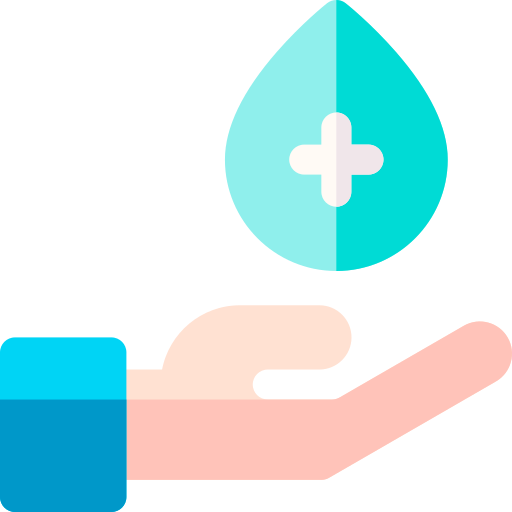

La Malvoyance
Qu’est-ce que la malvoyance ?

Combien de personnes sont concernées par la malvoyance ?
Quelles sont les maladies responsables de la malvoyance ?
Existe-t-il des moyens de prévention contre la malvoyance ?

Existe-t-il des traitements ?
Qui prend en charge les personnes atteintes de malvoyance ?
Comment se déroule la prise en charge psychologique pour les malvoyants ?